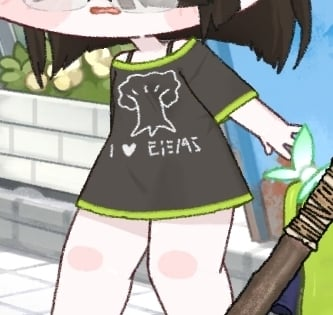

기본(코스프레)

사복 (본모습)
ㅋㅋㅋㅋㅋㅋㅋ
기본(코스프레)

사복 (본모습)
ㅋㅋㅋㅋㅋㅋㅋ
찌찌갑옷ㅋㅋ
짭젓
뽕찬건 처음보네ㅋㅋㅋㅋ 에슈르도 그렇겐 안하는데ㅋㅋㅋㅋ
에슈르는 '빵'하잖아 ㅋㅋㅋ
앵존투랑 영혼의 맞다이뜨겠네
역시 트릭컬리즘


초반에는 나는 자연인이다, 중반에는 리트냥이, 결말에는 결국 조커를 찍는 사도
조커도 저렇겐 못하것다
스태프에 포박된 정령 오우야
빵집주인보단 크구만!
확실히 변태팀에 아트가 많군요
아 저 알몸데이터 허리에 선이 있는 이유가 부착용 가짜가슴이라 그런건가 ㅋㅋ